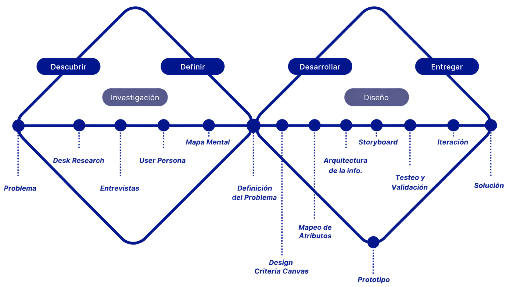
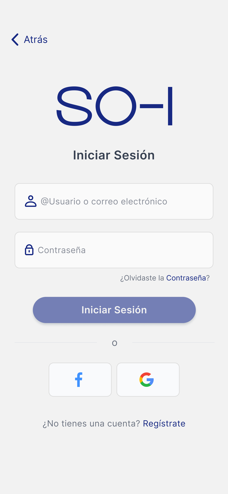
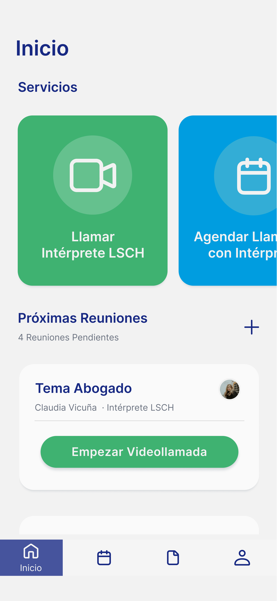
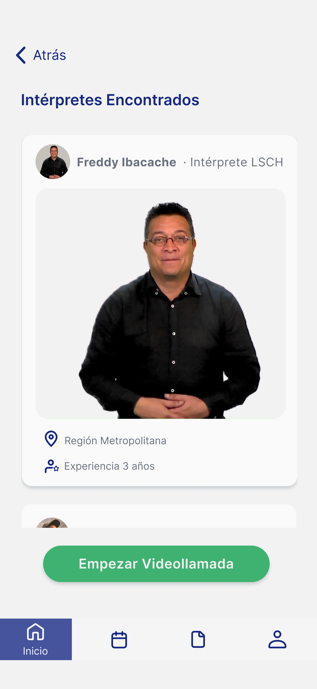
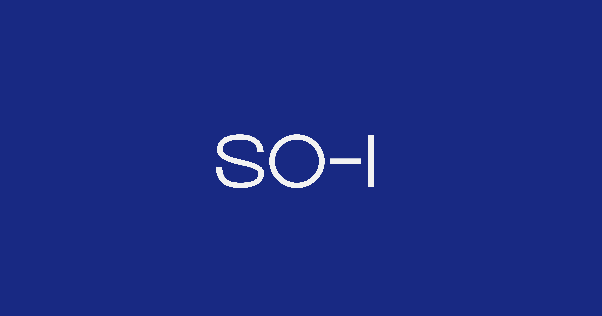

Aplicación Móvil
2024
En Chile hay 179.268 personas con sordera total. Para esta comunidad, comunicarse con el mundo oyente depende de la disponibilidad de intérpretes de Lengua de Señas Chilena (LSCH) — un recurso escaso, difícil de acceder en situaciones cotidianas y prácticamente inexistente en emergencias. SO-I es una aplicación móvil que conecta a personas Sordas con intérpretes certificados en tiempo real, clasificados por ámbito temático y disponibilidad, permitiendo también agendar llamadas y acceder a servicios de emergencia con interpretación simultánea.
El proyecto se desarrolló bajo una metodología de doble diamante: una primera fase de investigación y definición del problema, y una segunda de desarrollo de la solución y entrega del prototipo validado.

Se realizaron 22 entrevistas a miembros de la Comunidad Sorda, intérpretes de LSCH, fonoaudiólogos y fundaciones. Los hallazgos confirmaron que la falta de intérpretes en servicios públicos y situaciones de emergencia representa una barrera crítica — desde no poder comunicarse en una consulta médica hasta no poder llamar al 133 en una emergencia. A partir de esto se construyeron tres User Personas: la persona Sorda, la oyente y el intérprete.
Los wireframes estructuraron cada pantalla de la aplicación, enfocándose en la accesibilidad y simplicidad de uso para personas Sordas antes de aplicar el sistema visual.
Wireframes — estructura base de la aplicación
Se desarrolló un sistema de diseño completo — paleta, tipografía Inter y componentes — que asegura contraste y legibilidad para usuarios Sordos. El azul #172983 como color primario se eligió por su conexión directa con el simbolismo de la Comunidad Sorda.
Sistema de Diseño — resumen visual
El UI Kit incluyó botones, calendarios, cards y todos los componentes necesarios para garantizar consistencia en toda la plataforma.
UI Kit — componentes de la aplicación
Con el sistema de diseño definido, lo apliqué a los wireframes, transformando las estructuras básicas en prototipos visuales. Para asegurar la comprensión total de la Comunidad Sorda, implementé más de 20 videos en Lengua de Señas Chilena (LSCh) en todas las pantallas de la aplicación. Esto fue fundamental para que los usuarios se sintieran acompañados y comprendidos durante toda la interacción con la plataforma.

Inicio — registro e inicio sesión

Home — pantalla de inicio con los 3 servicios

Intérprete — encontrar intérprete según la región
Llamada — conexión con intérprete
Se realizaron dos rondas de testeo con miembros de la Comunidad Sorda, oyentes e intérpretes. La puntuación promedio en utilidad de servicios fue 9,67/10 y en claridad de información 9,67/10. El 100% de los participantes Sordos respondió que utilizaría la aplicación.
Testeo — Comunidad Sorda
Resumen audiovisual del proceso completo de SO-I: investigación, diseño, testeo y propuesta formal.
Cada usuario deberá registrarse para acceder a los 3 servicios de SO-I. En la sección para personas Sordas, todo el proceso de registro y la explicación de los servicios están en Lengua de Señas Chilena para facilitar la comprensión.
Flujo — Llamar al Intérprete
Flujo — Agendar Llamadas
Flujo — Llamadas de Emergencia
Además del prototipo en Figma, se desarrolló un segundo prototipo funcional en Flutter — el framework multiplataforma de Google. La funcionalidad más relevante implementada fue la de videollamadas en tiempo real con intérpretes de LSCH, validando la viabilidad técnica del servicio principal de SO-I.

Prototipo funcional en Flutter — videollamadas en tiempo real
SO-I fue seleccionado para participar en Incuba UDD, el programa de emprendimiento de la Universidad del Desarrollo basado en metodología Lean Startup. El proyecto avanzó con éxito hasta la última etapa de crecimiento del programa, presentándose ante una comisión evaluadora en junio de 2024 en la categoría ideas/prototipos.
El prototipo incluye los flujos principales de la aplicación: solicitud de intérprete, llamada de emergencia y agendamiento — con transiciones y estados tal como fueron diseñados.
Prototipo interactivo — flujos diseñados en Figma
Documento Académico
Investigación completa del proyecto: marco teórico, metodología, entrevistas, testeo con la Comunidad Sorda y propuesta formal.
Leer memoria ↗